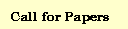

|
|
||
|  |
==============================================
Friday (October 6th)
==============================================
8:30-10:00 Keynote
Rich DeMillo: Why Software Falls Down
(Vice President, Applied Research, Telcordia Technologies)
Dick Lipton: Mutation: The Early Days
(Professor, Princeton University)
10:00-10:30 Coffee Break
10:30-12:00 Mutation: Application, Effectiveness, and
Test Generation (I)
Investigating the effectiveness of object-oriented
strategies with the mutation method
by Sunwoo Kim, John A. Clark and John A. McDermid
(University of York, UK)
The relationship between program dependence and
mutation testing by Mark Harman (Brunel University, UK),
Sebastian Danicic (University of London, UK) and
Rob Hierons (Brunel University, UK)
Mutation of model checker specifications for test generation
and evaluation by Paul E. Black (National Institute of
Standards and Technology), Vadim Okun and Yaacov Yesha
(University of Maryland - Baltimore)
12:00-1:30 Lunch Break (Lunch is provided to
all registered participants)
1:30-3:00 Mutation: Cost Reduction
Evaluation N-selective mutation for C programs:
Unit and Integration Testing.
by Jose Maldonado, Ellen Barbosa, Auri Vincenzi, and
Marcio Delamaro (University of Sao Paulo, Brazil)
Mutation 2000: uniting the orthogonal
by Jeff Offutt (George Mason University) and
Roland Untch (Middle Tennessee State University)
Unit and integration testing for C programs using
mutation-based criteria by Auri Vincenzi, Jose Maldonado,
Ellen Barbosa and Marcio Delamaro.
(University of Sao Paulo, Brazil)
3:00-3:30 Coffee Break
3:30-5:00 Mutation: Application, Effectiveness, and
Test Generation (II)
Trustable components: yet another mutation-based approach
by Benoit Baudry, Vu Le Hanh, Jean-Marc Jezequel, Yves Traon
(University of Beaulieu, France)
Parallel firm mutation of Java programs
by David Jackson and Martin Woodward
(University of Liverpool, UK)
Theoretical insights into the coupling effect
by How Tai Wah (South Bank University, UK)
Component customization testing technique using fault
injection technique and mutation test criteria
by Hoijin Yoon, Byoungju Choi
(Ewha Womans University, Korea)
Mutating network models to generate network security test cases
by Ronald Ritchey (Booz, Allen & Hamilton)
5:00-6:00 Break
6:00-6:30 Cash Bar Reception
6:30-? Banquet
==============================================
Saturday (October 7th)
==============================================
8:30-9:15 Keynote
Dick Hamlet: Programs Determined by Mutation-adequate Tests
(Professor, Portland State University)
9:15-10:30 Panel: Future of Mutation Testing and Its Application
Moderator: Jeff Offutt (George Mason University)
Panelists:
John Clark (University of York, UK)
Rich DeMillo (Telcordia Technologies)
Dick Lipton (Princeton University)
Martin Woodward (University of Liverpool, UK)
10:30-11:00 Coffee Break
11:00-12:00 Interface Mutation
Interface mutation
by Sudipto Ghosh (Colorado State University) and
Aditya Mathur (Purdue University)
Proteum/IM 2.0: an integrated mutation testing environment
by Marcio Delamaro, Jose Maldonado, Auri Vincenzi
(University of Sao Paulo, Brazil)
12:00-1:30 Lunch Break (You are on your own for lunch)
1:30-3:00 Tool Session
TDS: A tool for Testing Distributed Component-Based
Applications by Sudipto Ghosh (Colorado State University)
and Aditya Mathur (Purdue University)
Proteum: A family of tools to support specification and
program testing based on mutation
by Jose Maldonado, et al. (University of Sao Paulo, Brazil)
Mugent: A tool uses a model checker to generate test vectors
from a system specification by Paul Black (National Institute
of Standards and Technology)
3:00 Adjourn
|